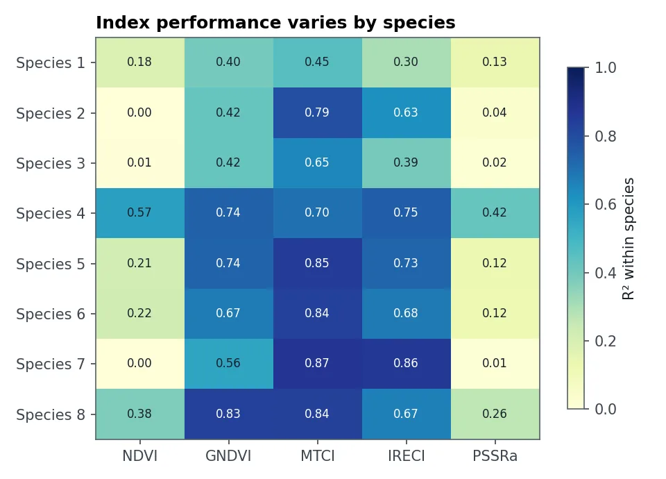
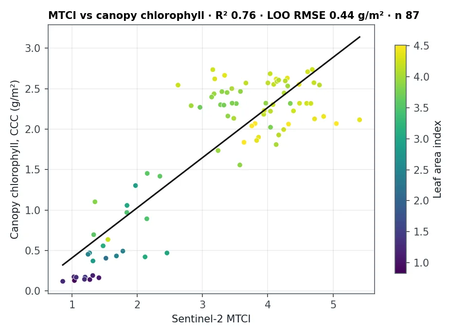

The question
Farm advisers, foresters and ecologists use satellite indices to monitor crop vigour and forest health. Choosing the wrong index can hide real problems, because some indices stop responding once plants are moderately green.
What I did
- Measured leaf reflectance from 350 to 1050 nm on 160 leaves, and their chlorophyll content in the lab.
- Simulated what Sentinel-2 would see by resampling each spectrum to the satellite's bands, including the red edgeThe steep rise in leaf reflectance between red and near-infrared light (about 690–750 nm). Its position shifts with chlorophyll content. bands.
- Computed five indices: NDVI, GNDVI, PSSRa, MTCI and IRECI.
- Tested each index three ways: within each species, pooled across species, and on a species the model had never seen.
- Repeated the test with real Sentinel-2 images over field plots in the New Forest, for both leaf and canopy chlorophyll.
What the results show

The two indices built on the red-edge bands do best. MTCI explains about three quarters of the chlorophyll variation within a species. IRECI holds up best on a new species, which matters when a model has to work on crops it wasn't trained on. NDVI, the most widely used index, explains almost nothing for several species because it saturates on green leaves.

From the satellite, every index tracks canopy chlorophyll (leaf chlorophyll × leaf area) better than leaf chlorophyll alone, because a pixel sees the whole canopy.
How sure can we be?
- Single leaves under lab light are cleaner than real 20 m pixels, which mix leaves, branches, soil and shadow.
- One region and one season (New Forest, April to October 2016) for the satellite part, so the models need recalibrating elsewhere.
- The lab measurements belong to a dataset that can't be redistributed. Results and code are public.
What a client gets
- A recommendation of which index to use for a crop, forest or habitat
- Calibrated index-to-chlorophyll models with error estimates
- Seasonal vigour maps from Sentinel-2
- Guidance on how many field samples are needed